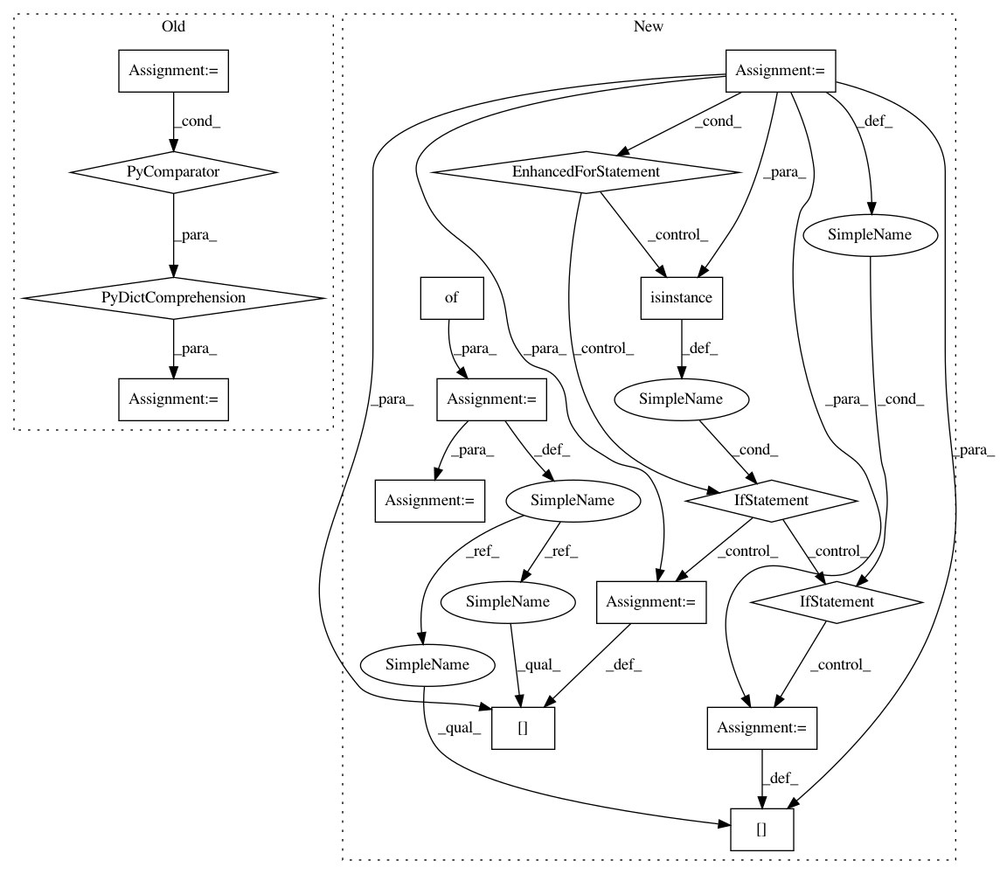

45f7651644f05b413ecd9366e7014edc7f0b8a24,catalyst/contrib/modules/lama.py,LamaPooling,__init__,#LamaPooling#Any#Any#,51
Before Change
self.poolings = poolings or ["last", "avg", "max", "softmax"]
self.features_out = features_in * len(self.poolings)
self.poolings = nn.ModuleDict({
k: self._get_pooling(k, self.features_in)
for k in self.poolings
})
@staticmethod
def _get_pooling(key, features_in):
if any([x in key for x in ["softmax", "tanh", "sigmoid"]]):
After Change
or ["last", "avg_droplast", "max_droplast", "softmax_droplast"]
self.features_out = features_in * len(self.groups)
groups = {}
for key in self.groups:
if isinstance(key, str):
groups[key] = get_pooling(key, self.features_in)
elif isinstance(key, dict):
key_ = key.pop("key")
groups[key_] = get_pooling(key_, features_in, **key)
else:
raise NotImplementedError()
self.groups = nn.ModuleDict(groups)
def forward(self, features):
:param features: [batch_size, history_len, feature_size]
In pattern: SUPERPATTERN
Frequency: 3
Non-data size: 16
Instances
Project Name: Scitator/catalyst
Commit Name: 45f7651644f05b413ecd9366e7014edc7f0b8a24
Time: 2019-09-06
Author: scitator@gmail.com
File Name: catalyst/contrib/modules/lama.py
Class Name: LamaPooling
Method Name: __init__
Project Name: Scitator/catalyst
Commit Name: 45f7651644f05b413ecd9366e7014edc7f0b8a24
Time: 2019-09-06
Author: scitator@gmail.com
File Name: catalyst/contrib/modules/lama.py
Class Name: LamaPooling
Method Name: __init__
Project Name: has2k1/plotnine
Commit Name: 329dfcea129f72eb3ea741dfc343d4c28c513c69
Time: 2014-02-06
Author: jasc@gmx.net
File Name: ggplot/ggplot.py
Class Name: ggplot
Method Name: _get_layers